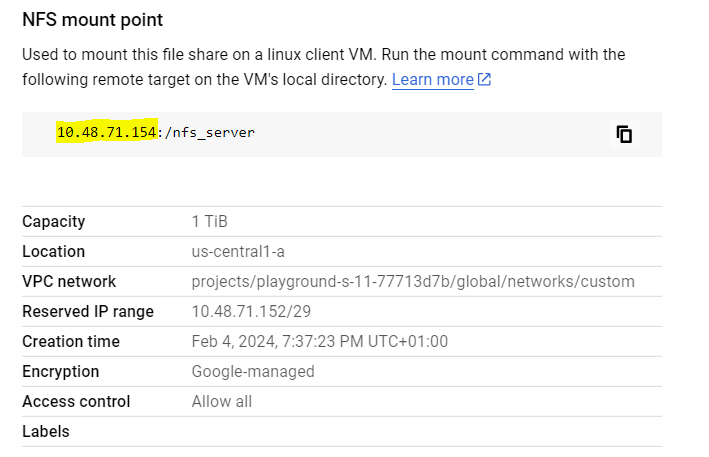
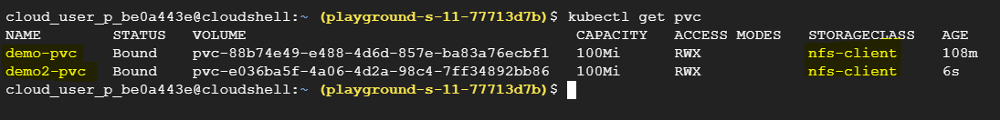
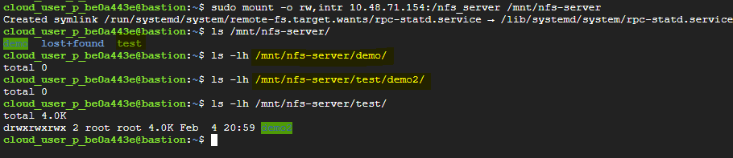

By default, a single filestore instance cannot be shared across multiple pods in GCP. However, there is a technique that can help you enable this functionality by using an external NFS provisioner. The latter separates the PVC of each application by using a subdirectory.
Create a single filestore instance
Firstly, you need to create a filestore instance in GCP.
- If you don’t use Shared VPC :
gcloud filestore instances create filestore-basic --tier=BASIC_HDD --network=name=custom --file-share=capacity=1TB,name=nfs_server --zone us-central1-a
- If you use a Shared VPC:
gcloud filestore instances create filestore-basic --tier=BASIC_HDD --network=name=custom,reserved-ip-range=172.16.0.0/29,connect-mode=PRIVATE_SERVICE_ACCESS --file-share=capacity=1TB,name=nfs_server --zone us-central1-a

Please note the following configurations:
- NFS Server: 10.48.71.154
- NFS Path: /nfs_server
You have to replace these values with your own.
Deploy NFS External Provisioner to GKE
- Connect to your GKE cluster and deploy NFS External Provisioner:
gcloud container clusters get-credentials [YOUR_CLUSTER_NAME] --zone [YOUR_CLUSTER_ZONE] --project [YOUR_PROJECT_ID]
helm repo add nfs-subdir-external-provisioner https://kubernetes-sigs.github.io/nfs-subdir-external-provisioner/
helm install nfs-subdir-external-provisioner nfs-subdir-external-provisioner/nfs-subdir-external-provisioner \
--set nfs.server=10.48.71.154 \
--set nfs.path=/nfs_server
The NFS subdir external provisioner pod is running:
- Configure the NFS subdir external provisioner:
Deploy the rbac described here for external provisioner in order to give the necessary permissions to its service account.
Then, update this nfs client provisioner with the following configurations:
- PROVISIONER_NAME: nfs-subdir-provisioner
- NFS_SERVER: 10.48.71.154
- NFS_PATH: /nfs_server
Finally, deploy this YAML to the same namespace on which nfs external provisioner is created.
kubectl apply -f nfs-client-provisioner.yaml -n default
You can see that the NFS Client Provisioner pod is running:
Create a StorageClass
Create a custom StorageClass named nfs-client with the content below:
apiVersion: storage.k8s.io/v1
kind: StorageClass
metadata:
name: nfs-client
provisioner: nfs-subdir-provisioner
parameters:
pathPattern: "${.PVC.annotations.nfs.io/storage-path}"
onDelete: delete
The value of provisioner attribute must match with the previously created PROVISIONER_NAME parameter.
Create a PVC
Create a PVC using the StorageClass above:
kind: PersistentVolumeClaim
apiVersion: v1
metadata:
name: demo-pvc
annotations:
nfs.io/storage-path: "demo"
spec:
storageClassName: nfs-client
accessModes:
- ReadWriteMany
resources:
requests:
storage: 100Mi

In this example, the PVC will be created in the filestore instance under the directory named demo.
You can modify the annotation nfs.io/storage-path to configure the directory in which the pvc will be created.
If you want to go further, you can mount this filestore instance into a compute engine client to view your data:
sudo apt-get -y update &&
sudo apt-get install nfs-common
sudo mkdir -p /mnt/nfs-server
sudo mount -o rw,intr 10.48.71.154:/nfs_server /mnt/nfs-server
